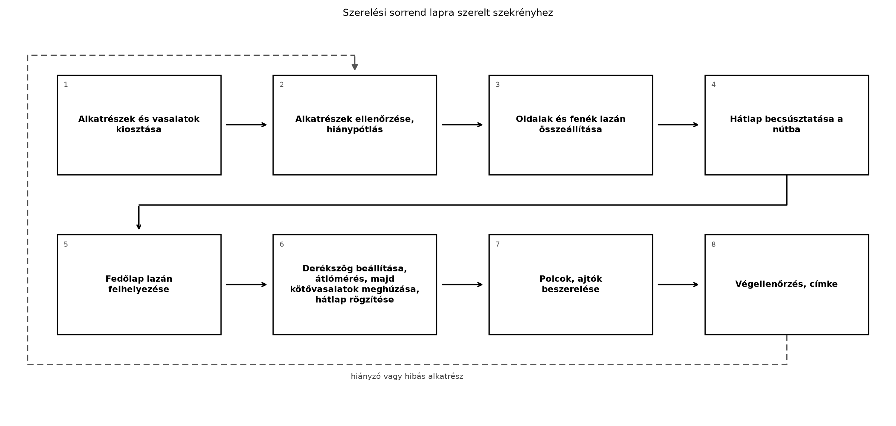

A lapszerkezetű bútorok nagy része lapra szerelve, csomagban vagy az előszerelés során szétbontva érkezik. A vevő dobozából ötven alkatrész, csomag vasalat és egy tekercs rajz kerülhet elő. Ha nincs egyértelmű szerelési útmutató, az alkatrészeket könnyen felcserélik, a vasalatot rossz furatba csavarják, a hátlapot megfordítják, a szekrény pedig görbe lesz vagy nem áll stabilan. Ugyanez történhet a műhelyben is az előszereléskor, ha a dolgozó nincs hozzászokva a termékhez. A szerelési dokumentáció azért kell, hogy a terméket mindenki ugyanúgy, hiba nélkül szerelje össze: a betanított szerelő, az ellenőrző művezető, a helyszínen dolgozó asztalos és a vásárló is.
Képzelj el egy lapra szerelt, kétajtós szekrényt a csomagolásában. Az alkatrészek tételszámos matrica nélkül egymásra vannak fektetve: bal oldal, jobb oldal, fenék, fedőlap, két ajtó, négy polc, hátlap. A vasalat egy külön zacskóban: excenterek, csavarok, csapok, zsanérok, polctartók, fiókcsúszó. A dobozra ragasztott robbantott ábra azt mutatja, hogy az alkatrészek milyen sorrendben és milyen irányban illeszkednek egymáshoz, mintha a szekrényt szétrobbantották volna. A rajzon minden alkatrésznek ugyanaz a tételszáma, mint a csomagolási listán. Ez a kép vezet végig az egész szerelésen.
Definíció. A szerelési dokumentáció a termék összeállításához szükséges rajzok, listák és utasítások rendszere. Részei: az összeállítási rajz, a robbantott ábra, az alkatrészlista, a vasalatlista és a szerelési sorrend (szerelési útmutató).
A szerelési dokumentáció célja, hogy azonosíthatóvá tegye az alkatrészeket, megadja a helyes irányukat és sorrendjüket, és előírja az ellenőrzési pontokat. A dokumentáció a gyártásban élő ellenőrző dokumentum, nem dísz. A gyártás előtti, közbeni és utáni ellenőrzés is ebből indul ki.
Az összeállítási rajz a kész terméket mutatja a fő méretekkel, tételszámokkal és a kapcsolódó darabjegyzékkel. A faipari gyakorlatban gyakran egyszerűsített, az üres furatokat, vasalatok helyét is jelöli. A tételszám a rajzon és az alkatrészlistán ugyanazt az elemet azonosítja.
A robbantott ábra az alkatrészeket a szerelés irányában húzza szét. A rajzoló úgy készíti el, hogy a szétrobbantott elemek nyilakkal vagy tengelyvonalakkal mutassák a beillesztés irányát. A hátlapot például hátulról kell a nútba csúsztatni; a robbantott ábra ezt a mozgást mutatja. A vevői szerelési útmutatóban gyakran csak a robbantott ábra és a számozott lépések szerepelnek.
Az alkatrészlista megadja a tételszámot, a megnevezést, a darabszámot, az anyagot és a méretet. A vasalatlista külön veszi a kötőelemeket, zsanérokat, fogantyúkat, polctartókat, csavarokat és a segédanyagokat. A szerelési sorrend lépésről lépésre, rövid mondatokban és rajzokkal írja le, mit kell tenni.
A szerelő az üzemi gyártástechnológiai leírásból más adatokat olvas ki, mint a vevői szerelési útmutatóból. A gyártástechnológiai leírás megadja a műveletek sorrendjét, a használt gépet, a beállításokat, a szorítási időt, a tűréseket és az ellenőrzési pontokat.
Példa. Egy tömörfa keret előszerelésének gyártástechnológiai leírásában ez állhat:
A gyártástechnológiai leírás tehát gyártási utasítás, a szerelési útmutató pedig felhasználói utasítás. A szerelő mindkét dokumentumot együtt használja: a technológiai leírásból tudja, milyen erővel és sorrendben szorítson, a szerelési rajzból pedig azt, melyik oldal hová kerül.
Szabály. A szerelési útmutató akkor jó, ha az olvasó szöveg nélkül, csak a rajzból is megérti, hova kerül az alkatrész. A szöveg rövid, a rajz nyelvezetfüggetlen, mert a termék külföldre is kerülhet.
Recept: szerelési útmutató készítése 1. Készítsd el a termék összeállítási rajzát, és azonosítsd az alkatrészeket tételszámokkal. 2. Készítsd el az alkatrész- és vasalatlistát, a lista oszlopai: tételszám, megnevezés, darab, anyag, méret, megjegyzés. 3. Határozd meg a szerelés logikus sorrendjét: először a nagyméretű, stabil keretet, majd a merevítő hátlapot, utoljára a mozgó elemeket (ajtó, fiók, polc). 4. Rajzold meg a robbantott ábrát vagy a lépésenkénti piktogramokat. Minden új lépésben csak azt az alkatrészt emeld ki, amely éppen bekerül. 5. Írj a lépésekhez rövid utasítást: „Csúsztasd a hátlapot a nútba”, „Húzd meg az excentereket”, „Ellenőrizd a derékszöget”. 6. Jelöld a veszélyes műveleteket piktogrammal: éles él, ujjbecsípődés, borulás, nehéz alkatrész. 7. Ellenőrizd az útmutatót próbaszereléssel: egy olyan személy szerelje össze, aki nem ismeri a terméket, és minden megakadt lépést javíts.
A nyelvfüggetlen jelölésnél a rajzon tételszámok, nyilak, méretek és piktogramok szerepelhetnek. A szavak helyett sematikus ábrát használunk: egy körbe rajzolt csavarhúzó jelzi a csavarozást, egy derékszög ikon az ellenőrzést.
Termék: kétajtós, lapra szerelt szekrény, anyaga 16 mm-es laminált forgácslap, hátlap 3 mm-es HDF. Névleges méret: szélesség 800 mm, magasság 500 mm, mélység 400 mm. A méretek és a vasalatdarabok tanulási példák, nem gyártási előírások.
Az összeállítási rajz szöveges leírása:
Az E vetítési rendben elölnézetben a szekrény 800 mm széles és 500 mm magas. A két ajtó egy síkban zár, középen 3 mm-es hézag van. A bal oldali ajtó balra, a jobb oldali jobbra nyílik. A felülnézetben a korpusz mélysége 400 mm, a hátlap hátul a nútban ül. A metszet a bal oldalnál mutatja a fenék és a fedőlap csatlakozását excenterkötéssel. A tételszámok: 1 – bal oldal, 2 – jobb oldal, 3 – fenék, 4 – fedőlap, 5 – két polc, 6 – hátlap, 7 – bal ajtó, 8 – jobb ajtó.
Az összeállítási rajzon az elölnézet alatt a felülnézet, mellette az oldalnézet áll (E vetítés), a részletmetszet az oldal–fenék excenterkötést mutatja. A robbantott ábrán az oldalak oldalra, a fenék lefelé, a fedőlap felfelé, a hátlap hátrafelé, az ajtók előre húzódnak szét; a nyilak a beillesztés irányát jelzik. A hátlap az ábrán 782 × 480 × 3 mm, mert a 8 mm mély nútba oldalanként 7 mm-re, alul és felül 6 mm-re nyúlik be (ellenőrizendő a szerkezeti rajzon). Az interaktív változat a szerelést lépésenként játssza le.
Az alkatrészlista részlete:
| Tétel | Megnevezés | Db | Anyag | Kész méret h × sz × v (mm) | Megjegyzés |
|---|---|---|---|---|---|
| 1 | Bal oldal | 1 | laminált forgácslap | 500 × 400 × 16 | furatok az excenterekhez |
| 2 | Jobb oldal | 1 | laminált forgácslap | 500 × 400 × 16 | furatok az excenterekhez |
| 3 | Fenék | 1 | laminált forgácslap | 768 × 400 × 16 | bázisfurat |
| 4 | Fedőlap | 1 | laminált forgácslap | 768 × 400 × 16 | bázisfurat |
| 5 | Polc | 2 | laminált forgácslap | 768 × 380 × 16 | polctartó furatok |
| 6 | Hátlap | 1 | HDF | 782 × 480 × 3 | nútba csúsztatható (8 mm mély nút; oldalanként 7, alul-felül 6 mm befogás – ellenőrizendő) |
| 7 | Bal ajtó | 1 | laminált forgácslap | 397 × 450 × 16 | zsanérfuratok |
| 8 | Jobb ajtó | 1 | laminált forgácslap | 397 × 450 × 16 | zsanérfuratok |
A vasalatlista:
| Tétel | Megnevezés | Db | Felhasználási hely |
|---|---|---|---|
| 10 | Excenter | 8 | oldal–fenék, oldal–fedőlap |
| 11 | Excentercsavar | 8 | fentiekhez |
| 12 | Köldökcsap (tipli) | 8 | oldal–fenék, oldal–fedőlap |
| 13 | Polctartó | 8 | oldalfalakba furatonként |
| 14 | Bútorzsanér | 4 | ajtónként 2 db |
| 15 | Csavar 4 × 16 mm | 16 | zsanérokhoz |
| 16 | Hátlapcsavar 3 × 15 mm | 12 | hátlap rögzítéshez |
A szerelési sorrend kidolgozott lépései:
Az alábbi diagram a szerelési sorrendet egészben mutatja:

Szabály. Az előszerelést úgy kell megszervezni, hogy az alkatrészek ne keveredjenek, ne sérüljenek, a szerszámok kéznél legyenek, és a szerelő minden lépés után ellenőrizni tudjon. A rossz munkahelyi rend meglassítja a munkát és hibát okoz.
Munkahely. A szerelőasztal legyen sík, tiszta, lehetőleg filc vagy védőalátét borítású, hogy a laminált él ne pattanjon le. A munkadarabokat ne egymásra, hanem élükre állítva vagy állványon tárold. A vasalatokat kis rekeszes dobozban, tételszám szerint készítsd elő. A rajzot és a csomagolási listát tedd a falra vagy az asztal mellé, hogy a szerelő ne a kezében tartsa.
Eszközök. A lapra szerelt bútorhoz jellemzően csavarhúzó, excenterkulcs, gumikalapács, mérőszalag, derékszög, vízmérték, csomagológép és olló kell. Gépi behajtásnál a csavarozó nyomatékát állítsd alacsonyra, hogy ne csavard át a furatot. A kézi szerelés lassúbb, de kisebb a sérülés kockázata.
Sorrend. A sorrend meghatározásakor először a teherhordó kapcsolatokat hozd létre, utána a merevítést, végül a mozgó elemeket. Ez csökkenti a borulás és a vetemedés kockázatát. Az előszerelésnél előfordulhat, hogy a szerelő túl korán húzza meg az összes excentert, és utána nem tudja a hátlapot behelyezni. Ezért a sorrendben mindig szerepeljen a „lazán összeállít, derékszöget ellenőriz, majd meghúz” lépés.
Idő. Az összeállítási időt a technológiai leírásban szereplő normaidő adja meg. A norma időtartamot jelöl, például egy egyszerű szekrény előszerelése 25–35 perc lehet (tájékoztató, üzemi norma). A dolgozó teljesítménye és a gyakorlata befolyásolja. Az időtervezéskor a szerszámok előkészítését és az ellenőrzést is számold be.
Számítás. Ha egy szekrény előszerelési normája 30 perc, és egy megrendelésben 6 szekrény van, akkor a tiszta szerelési idő:
Behelyettesítve:
Ellenőrzés: 6 × fél óra = 3 óra, a nagyságrend helyes.
Ehhez hozzájön az alkatrészek kiosztása, a csomagolás és a dokumentálás ideje. A gyakorlatban ezért a teljes átfutási időt 3,5–4 órára tervezd (tájékoztató, üzemi adat).
A szerelés minőségbiztosítása a szerelési dokumentációból indul. A szerelőnek ellenőriznie kell, hogy a rajz, az alkatrészlista és a tényleges alkatrészek egyeznek. Az ellenőrzési pontok a következők:
Hibaeset a szereléskor. Egy szekrénynél a vevő reklamált, hogy az ajtó nem zár, a jobb oldali ajtó felső sarka 5 mm-rel kiáll. A műhelyben a szerelő megnézte az ellenőrzőlapot: az átlós méretek nem voltak feljegyezve. A korpusz nem volt derékszögben, amikor a hátlapot rögzítették. A valódi ok az volt, hogy az excentereket a hátlap rögzítése előtt részben meghúzták, de a derékszöget nem ellenőrizték. A korpusz trapéz alakú lett. A helyes gyakorlat: derékszög beállítása után mérjük az átlókat, és csak azután rögzítjük a hátlapot. Ezt a szerelési útmutatóban is külön ki kell emelni.
A tételszám hiányzik a rajzról vagy a csomagról. Ok: a csomagolási listát nem frissítették a tervmódosításkor. Helyes gyakorlat: a rajz, az alkatrészlista és a csomag egyaránt a legújabb tervverzióból készül; a szerelő hiányzó jelölésnél azonnal jelzi.
A szerelési sorrend nem logikus: az ajtókat a korpusz derékszögbe állítása előtt szerelik fel. Ok: a lépéssort a rajz alapján, próbaszerelés nélkül írták. Helyes gyakorlat: a lépéseket próbaszereléssel ellenőrzik, és a végén derékszög-ellenőrzés szerepel.
Az excentereket túlhúzzák, a furat kitágul, a vasalat nem tart. Ok: nagy nyomatékú csavarozót használnak, a nyomatékot nem korlátozzák. Helyes gyakorlat: állítható nyomatékú csavarozó, vagy kézi excenterkulcs; a gyártói nyomatékérték betartása (ellenőrizendő).
A hátlapot kihagyják a derékszög-beállításból, ezért a szekrény paralelogramma alakú. Ok: a szerelő csak a homlokzati lapot nézi, a belső derékszöget nem. Helyes gyakorlat: a hátlap merevítő szerepét kihasználjuk, és a rögzítés előtt mindkét átlót mérjük.
Egy beépített szekrényt a helyszínen szereltek. A szerelési útmutató szerint a polcokat a korpusz összeszerelése után kellett volna behelyezni. A szerelő azonban időt akart spórolni, és a polcokat már a korpusz fektetése közben behelyezte. Amikor a szekrényt felállították, a harmadik polc nem fért be, mert a hátlap nútjának kiosztása miatt a polcot függőlegesen kellett volna bevezetni, nem vízszintesen. A polc sarka lepattant, a helyszínen javítani kellett. A tanulság: a szerelési sorrend nem javaslat, hanem a konstrukcióból következő kényszer. Aki eltér, előbb gondolja végig a beillesztési irányt.
1. feladat (A) Sorold fel a szerelési útmutató részeit, és írd le, mi a különbség az összeállítási rajz és a robbantott ábra között.
2. feladat (A) Egy lapra szerelt szekrényhez 12 excenter, 8 köldökcsap, 4 zsanér és 24 csavar szükséges. A raktárban 30 excenter, 20 köldökcsap, 10 zsanér és 50 csavar van. Hány szekrényt tudsz hiánytalanul előszerelni?
3. feladat (B) Az alkatrészlista szerint az 1. és 2. tétel (bal és jobb oldal) furatképe tükörszimmetrikus. A szerelő a jobb oldalra a bal oldalt szánja. Mit ellenőriz, mielőtt a vasalatot behajtja? Írd le lépésenként.
4. feladat (B) Adott egy hibás szerelési sorrend: (1) ajtókat a korpuszra szereli, (2) fenék és fedőlap összecsavarozza, (3) hátlapot behelyezi, (4) excentereket meghúzza, (5) derékszöget ellenőriz. Rendezd helyes sorrendbe, és indokold a változtatást.
5. feladat (C) A szerelési útmutató rajzán a tételszámok hiányoznak a robbantott ábráról, a szöveg pedig csak „rögzítsd az oldalt” utasítást tartalmaz. Milyen hibákat okoz ez a vevői szerelésben? Javasolj javítást a rajzhoz és a szöveghez.
6. feladat (D) Készíts rövid szerelési útmutatót egy egyszerű, nyitott fiókos éjjeliszekrényhez, lapra szerelt kivitelben. Adott alkatrészek (magasság × mélység × vastagság, mm): bal és jobb oldal 2 db, 500 × 380 × 16; fenék 468 × 370 × 16 (a külső szélesség 2 × 16 + 468 = 500 mm); fedőlap 540 × 400 × 16 (elöl és oldalt 20 mm túlnyúlás); hátlap 476 × 484 × 3 (4 mm mély nútba; ellenőrizendő a nútméret); egy fiók: 2 oldal (340 × 100 × 16), eleje és hátulja (411 × 100 × 16), feneke (435 × 332 × 3, nútba); 2 db fiókcsúszó (a fiók külső szélessége 468 − 2 × 12,5 = 443 mm; ellenőrizendő: csúszógyártó beépítési mérete). Írd le a rajzok tartalmát szövegben, az alkatrészlista táblázatot, a vasalatlistát és a számozott szerelési lépéseket ellenőrzési pontokkal.
Önellenőrzés – válaszok
1. feladat A szerelési útmutató részei: összeállítási rajz, robbantott ábra, alkatrészlista, vasalatlista, szerelési sorrend. Az összeállítási rajz a kész terméket mutatja a fő méretekkel és tételszámokkal; a robbantott ábra az alkatrészeket a beillesztés irányában szétrobbantott helyzetben mutatja, nyilakkal vagy tengelyvonalakkal.
2. feladat Kiszámítjuk az előszerelhető szekrények számát minden anyagnál: - excenter: , tehát 2 teljes szekrény - köldökcsap: , tehát 2 teljes szekrény - zsanér: , tehát 2 teljes szekrény - csavar: , tehát 2 teljes szekrény A minimális eredmény 2, tehát 2 szekrényt tudunk hiánytalanul előszerelni.
3. feladat Lépések: 1. Nézd meg a műhelyrajzon a bázisfél és a furatkiosztás irányát. 2. Fogd a bal oldalt, és tartsd a bázisfelülete szerint. 3. Ellenőrizd, hogy a furatok a belső oldalon vannak, és a bázisfalhoz viszonyított távolságuk megegyezik a rajzzal. 4. A jobb oldalt ugyanezzel a bázisfallal hasonlítsd össze. 5. Ha a furatkiosztás tükörszerű, akkor a bal oldalt nem lehet a jobb oldalra szerelni; jelöld a tételszámot és cseréld ki.
4. feladat Helyes sorrend: 1. Az oldalak és a fenék összecsavarozása excenterekkel, lazán. 2. Hátlap becsúsztatása a nútba (amíg a fedőlap nincs fent). 3. Fedőlap felhelyezése, lazán. 4. Derékszög ellenőrzése, átlómérés. 5. Excenterek meghúzása, a hátlap rögzítése. 6. Ajtók szerelése a korpuszra. Indoklás: a hátlap behelyezése előtt nem húzhatjuk meg az excentereket, mert a korpuszt derékszögbe kell állítani; az ajtók csak a merev, derékszögbe állított korpuszra kerülhetnek.
5. feladat A hiányzó tételszámok miatt a vevő nem tudja azonosítani, melyik csomag melyik rajzbeli elemet tartalmazza; az alkatrészeket felcseréli, rossz furatba csavarja a vasalatot, a hátlapot megfordítja. A javítás: a robbantott ábrán minden alkatrészre tételszámot kell tenni, a szövegben meg kell adni a tételszámot, az irányt és a vasalat darabszámát, például: „5. lépés: rögzítsd a 2. tétel (jobb oldal) excentereit a 3. tétel (fenék) felőli oldalon.”
6. feladat Szerelési útmutató rövid leírása:
| Tétel | Megnevezés | Db | Anyag | Kész méret h × sz × v (mm) |
|---|---|---|---|---|
| 1 | Bal oldal | 1 | laminált forgácslap | 500 × 380 × 16 |
| 2 | Jobb oldal | 1 | laminált forgácslap | 500 × 380 × 16 |
| 3 | Fenék | 1 | laminált forgácslap | 468 × 370 × 16 |
| 4 | Fedőlap | 1 | laminált forgácslap | 540 × 400 × 16 |
| 5 | Hátlap | 1 | HDF | 476 × 484 × 3 |
| 6a | Fiókoldal | 2 | laminált forgácslap | 340 × 100 × 16 |
| 6b | Fiók eleje, hátulja | 2 | laminált forgácslap | 411 × 100 × 16 |
| 6c | Fiókfenék | 1 | HDF | 435 × 332 × 3 |
A szerelési dokumentáció az összeállítási rajz, a robbantott ábra, az alkatrészlista, a vasalatlista és a szerelési sorrend rendszere. Az összeállítási rajz a kész terméket, a robbantott ábra a beillesztési irányokat mutatja. A gyártástechnológiai leírás a szorítási időket, a tűréseket és az ellenőrzési pontokat adja meg, a szerelési útmutató pedig a vevőnek vagy a betanított szerelőnek szól. A szerelési útmutatót rövid, nyelvfüggetlen piktogramokkal és tételszámokkal kell elkészíteni; a lapra szerelt bútornál a sorrend: alkatrészellenőrzés, lazán összeállítás, hátlap behelyezés, derékszög-ellenőrzés, meghúzás, mozgó elemek, végellenőrzés. A munkahelyet úgy kell megszervezni, hogy az alkatrészek ne keveredjenek, a szerszámok kéznél legyenek, a sérülékeny élek védettek legyenek. A minőségbiztosítás a szerelési dokumentációból indul, és minden lépés után mérhető ellenőrzést ír elő. Továbbvitt eredmény. A szerelési útmutató, az alkatrész- és vasalatlista, valamint a sorrend ellenőrzési pontjai az Alkatrészek méret- és minőségellenőrzése, dokumentálás alfejezetben használatosak az előszerelés, a szerelés és a helyszíni szerelés során.
Forrástípusok: ISO 9001 minőségirányítási szabvány a dokumentumok és feljegyzések kezeléséhez; fogyasztóvédelmi előírások a használati és szerelési útmutató tartalmára; MSZ EN ISO 128, 129 és 5455 rajzi szabványok a tételszámok és méretmegadás alapjaihoz; bútorvasalat-gyártók katalógusai az excenterek, zsanérok és fiókcsúszók szerelési méreteihez; üzemi technológiai leírások és normaidők. Ellenőrizendő: a fogyasztóvédelmi jogszabály pontos hatályos megnevezése, a vasalatszerelési méretek és nyomatékértékek, a felhasznált tűrések és az üzemi normaidők, valamint a rajzi szabványok pontos számai. A példákban szereplő termékméretek, vasalatdarabszámok és idők tanulási példák, nem tervezési vagy gyártási előírások.